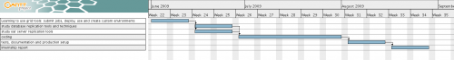

Fault Tolerance Page
From WikiOAR
Student, please read carefully this page...
Student: Joris Bremond
Mentor: Joseph Emeras
Co-Mentor: Olivier Richard
Contents |
Student: Things to do before starting
- get an account on grid5000: https://www.grid5000.fr/mediawiki/index.php/Grid5000:Get_an_account
- get a svn account on the inria gforge: https://gforge.inria.fr/account/register.php (Mescal team)
- connect to the g5k jabber and add mentor as contact
Project's specifications
MUST
- work with security systems such as Kerberos
- make the database fault tolerant
- make the oar server fault tolerant
- lighter possible
- well documented and packaged
SHOULD
- independent from the OAR's code
MAY
- automatic redirection of requests to the database if main db fails over
- automatic redirection of packets to server if the main server crashes
- load-balancing
How to start the project
- Begin by studying drdb and ultramonkey. What they are intended to, their limits their different configuration/setup options.
- Test OAR: submission, jobs execution and management, see:
- Test deploying environment on OAR
- Create your own environment or modify one existing and save it.
Roadmap (and Timeline)
Official gsoc date: 23rd May to 17th August. Joris availability: 1st June to 28th August. So as the dates almost match, we will stick on the student's availability for the schedule. The last 10 days when gsoc is officially over and not Joris's internship will be reserved for making all the documentation and packaging needed.
Important steps
- 23 May: Official gsoc start date
- 1 June: Joris begins his work
- 6-12 July: mid-term eval
- 17 August: Official gsoc end date
- 17-24 August: final eval
- 28 August: Joris terminates his internship
- 3 Sept: Students can begin submitting required code samples to Google
Roadmap
Roadmap is available as a picture:

TODO list
Mentor
Student
Links to look at
priority:
then also:
- http://www.howtoforge.com/setting-up-a-loadbalanced-mysql-cluster-with-mysql5.1
- http://www.howtoforge.com/mysql5_master_master_replication_debian_etch
Proposition
Architecture
This proposition is based on :
- HeartBeat is the daemon which make resources hightly available. We can use heartbeat to manage OAR-server and BDD (mysql or postgres)
- DRBD : Raid1 over IP --> Mirroring on each disk. The DB data will be on this shared disk.
Abstract
With this solution, heartbeat can detect when an other server is down and lunch services. It can also monitor the different services which run on the server, and detect errors. For example, if a service fails, heartbeat server tries to restart this service. If it's impossible, the group of resources (Virtual IP + DRBD + OAR-server + BDD) are migrated on the backup server.
Progress
Script
I have realized a script which takes parameters and install / configure heartbeat and DRBD on two servers. It takes different parameters :
- Is it the master or slave server
- Interface, for communicate between the two servers
- Database type : mysql or postgres. The script can deploy HA in both configurations
- Size of the database partition
- Virtual IP and CIDR netmask
Heartbeat communications are encrypted with SHA. We can also encrypt DRBD communications, but currently I haven't do that.
This configuration with the script is OK. We can deploy High Availability solution in 2 different configurations :
- OAR-server and database on the same server --> 2 nodes (1 master / 1 backup)
- OAR-server and database on different server --> 4 nodes (2 master (OAR, DB) / 2 backup (OAR, DB))
TO DO --> My work now is to test the configurations 2master/2backup, with 4 nodes for servers, 1 front-end, and N nodes. I must test network crashes, computer shutdown, etc.
Tests :
- disconnect the network on one nodes
- crash oar-server service
- crash mysql service
- crash mysql servcie when the oar server write on it (difficult)
- reserve a job, crash oar-server, close the job
- ...
Test OK The test are pretty good. I have practice test on four different configuration : 2 nodes with postgres or mysql, 4 nodes with postgres or mysql.
Now I begin to write documentations.
- I also plan the synchronization of oar.log between OAR-servers
- If I have time, test HA on CentOs distribution
DRBD Benchmark
For know DRBD performance, I have realized different benchmark with mysql for test DRBD performance.
- without DRBD, mysql data mounted on the system filesystem
- with DRBD, mysql data mounted on DRBD filesystem
- with DRBD and saturated network
Results
- This test was maked on genepi-31.grenoble.grid5000.fr.
- The backup server (for DRBD) was genepi-32.grenoble.grid5000.fr
- Filesystem with and without DRBD was ext2
- The rate between this two node was 740Mo/s (Max)

{kind=link}
{kind=link}
{kind=link}